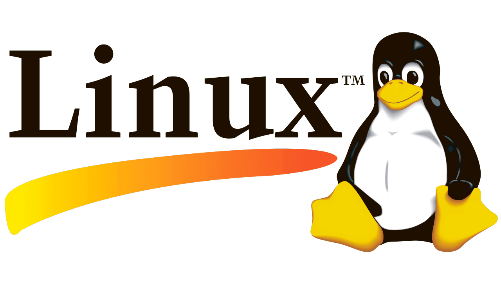

Effiziente Navigation in der Linux-Konsole

Linux ist für mich wie ein riesiger Werkzeugkasten, gefüllt mit mächtigen Befehlen, die nur darauf warten, geschickt eingesetzt zu werden. Hinter jeder schlichten Zeile in der Kommandozeile verbirgt sich Potenzial, das man sich mit ein wenig Übung zunutze machen kann. Wenn man zusätzlich noch SSH beherrscht, hat man quasi den Generalschlüssel zu jeder entfernten Maschine, auf der man ein Benutzerkonto besitzt. Perfekt für den Fall, wenn man im richtigen Moment von überall aus zugreifen möchte.
1. Warum Linux-Befehle so entscheidend sind
In der Windows-Welt mag vieles über Benutzeroberflächen laufen. In Linux jedoch werden handfeste Aufgaben – wie Dateien verwalten, Verzeichnisse wechseln oder wichtige Systeminformationen auslesen – oft per Terminal erledigt. Ein paar Klassiker:
-
ls: Zeigt den Inhalt eines Verzeichnisses an. Mit Parametern wie-a(alle Dateien, auch versteckte) sieht man noch mehr Details. -
cd <pfad>: Wechselt ins gewünschte Verzeichnis (z. B.cd /,cd ..,cd ./ordner). -
cat <datei>: Zeigt den Inhalt einer Datei an (praktisch zum schnellen Prüfen von Configs oder Passwörtern). -
pwd: Zeigt den aktuellen Pfad an, in dem du dich befindest. -
clear: Leert das Terminal und räumt den Bildschirm auf. -
help: Zeigt eine Übersicht verfügbarer Befehle oder gibt Hilfetexte zu bestimmten Befehlen aus.
Gerade bei heiklen Operationen gilt: Doppelt prüfen, bevor man einen Befehl abfeuert. „root“ zu sein heißt, jedes Kommando kann das System nachhaltig verändern. Was in einer Kommandoshell an Rechten existiert, kann ähnlich gefährlich sein wie ein unbewachter Tresor.
2. SSH – Die geheime Hintertür (legal oder nicht)
SSH steht für „Secure Shell“ und ist de facto der Standard, um sich sicher auf entfernten Rechnern anzumelden. Ohne SSH müssten wir riskante Klartext-Verbindungen (Telnet, rsh etc.) nutzen, was viel zu leicht abgefangen werden kann. Mit SSH wird jede Sitzung verschlüsselt, wodurch Passwörter und Daten für Außenstehende verborgen bleiben.
-
Verbindungsaufbau: Typischerweise:
ssh benutzername@serveradresse. Danach kommt die Passwortabfrage oder – noch besser – die Nutzung eines SSH-Keys. -
Key-basierte Authentifizierung:
Ein SSH-Key besteht aus einem privaten und einem öffentlichen Schlüssel.
Den öffentlichen Schlüssel lädt man auf den Zielserver hoch (in
~/.ssh/authorized_keys), den privaten Schlüssel behält man unter Verschluss. Mitssh-keygenkann man solche Schlüssel erzeugen. -
Portweiterleitungen & Tunneling:
SSH kann mehr als nur eine Remote-Shell öffnen. Man kann z. B. Ports vom lokalen Rechner zum entfernten Server
tunneln (und umgekehrt). Das läuft oft über den Parameter
-Loder-R, je nach Richtung. -
Config-Datei nutzen:
In
~/.ssh/configlassen sich Verbindungsdetails hinterlegen, so dass man nicht jedes Mal Serveradresse, Port und Benutzer eingeben muss.
3. Worauf man achten sollte
Sichere Schlüsselverwaltung: Wer seinen privaten SSH-Key verliert oder unverschlüsselt teilt, hat ein Problem.
Rechte & Eigentümer: Auf Linux-Systemen kann man sich schnell zum Admin (root) hochschaukeln, wenn Dateien falsch berechtigt sind.
Protokollierung: Viele Systeme loggen jede SSH-Sitzung (z. B. in /var/log/auth.log).
Firewall-Konfiguration: Ist Port 22 (Standard für SSH) offen oder nutzt man einen anderen Port?
4. Fazit
Ohne Linux-Basiswissen und SSH-Kenntnisse ist man im Serverumfeld wie ein Taucher ohne Sauerstoff – man kommt nicht weit. Wer aber routiniert damit umgeht, sichert sich einen bequemen Zugang zu entfernten Systemen, kann Daten blitzschnell verarbeiten und hat die volle Kontrolle über das Geschehen. In einer digitalen Welt, in der Geschwindigkeit und Flexibilität zählen, ist SSH der Türöffner, der dich von überall her an deine Systeme lässt. Und wer einmal gelernt hat, die geballte Macht der Linux-Befehle zu nutzen, empfindet jede andere Umgebung plötzlich als beunruhigend begrenzt.
Nutze das Terminal klug – und vor allem verantwortungsvoll. Denn jede kleine Zeile kann dein mächtigster Verbündeter oder dein schlimmster Albtraum sein.